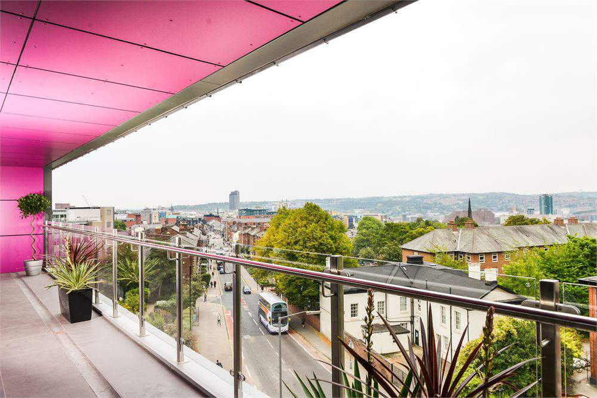
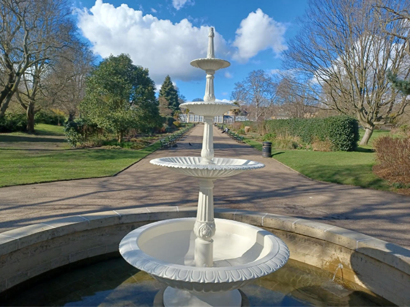

Welcome to the University Quiz
Test your knowledge about the city of Sheffield and see how much you really know about the city!
How to Play:
- Simply answer the questions by selecting the correct options.
- Each question has multiple-choice answers ‐ only one is correct.
- After answering the quiz, you can see the correct answer by hovering over the text below.
Are you ready to take on the challenge? Let's see if you're the ultimate Sheffield expert!
Question 1
Which park in Sheffield is known for its historic bandstand and often hosts concerts in the summer?
Hover me for the correct answer:
B. Weston ParkQuestion 2

Located on the fifth floor of the Students’ Union, which eatery offers views over Sheffield along with British and international cuisine?
Hover me for the correct answer:
C. Inox DineQuestion 3

This location is a 15-minute walk from campus and is known for its Victorian-era fountains and restored glass pavilions. Which spot is this?
Hover me for the correct answer:
D. Botanical Gardens